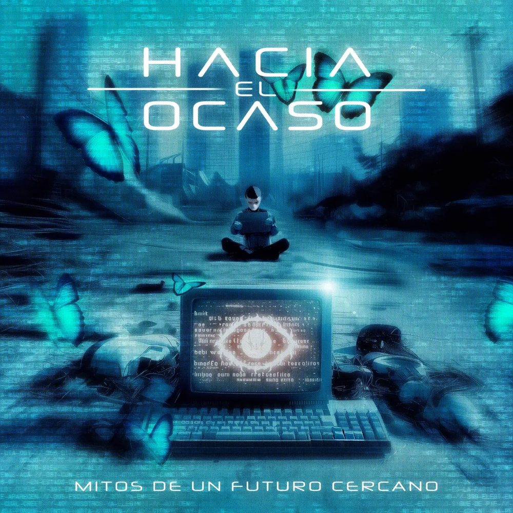

Hacia el Ocaso
Mitos De Un Futuro Cercano
Metal alternativo de Buenos Aires.
Doce temas sobre un futuro que ya llegó.

Hacia el Ocaso
Metal alternativo de Buenos Aires.
Doce temas sobre un futuro que ya llegó.